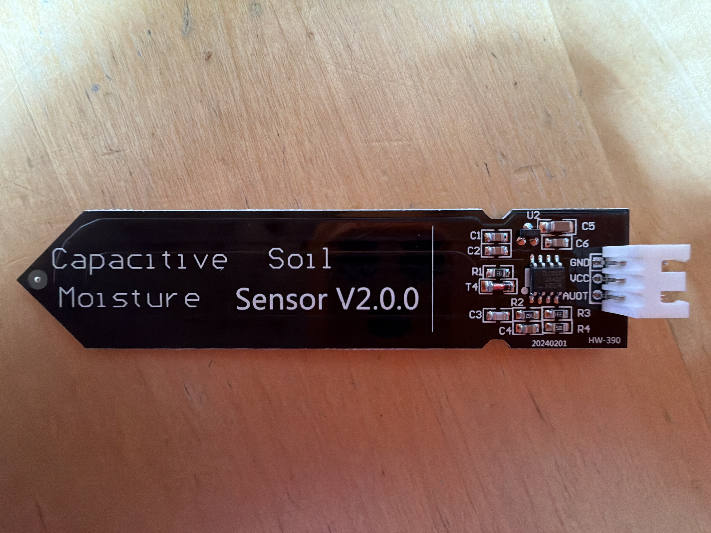
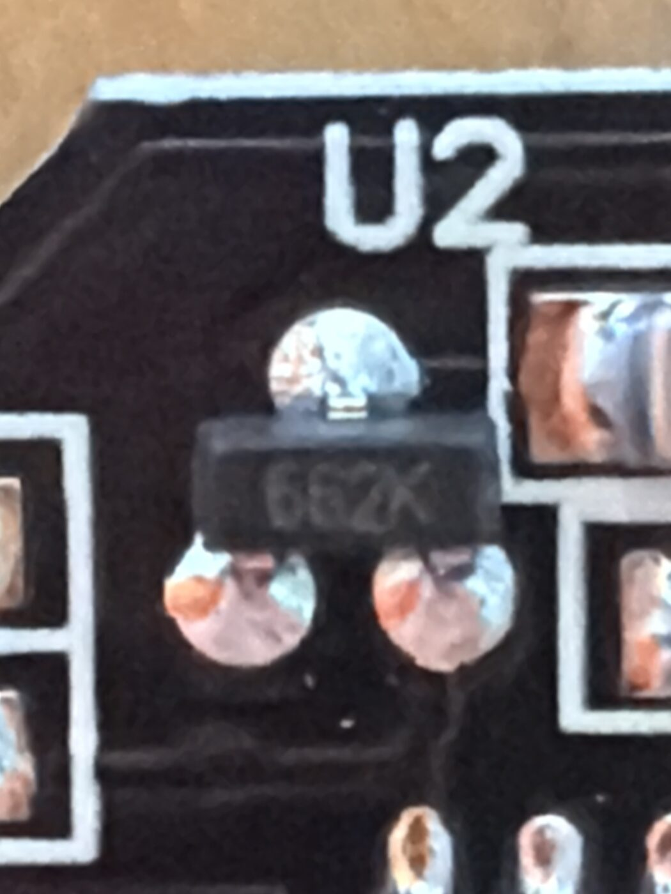
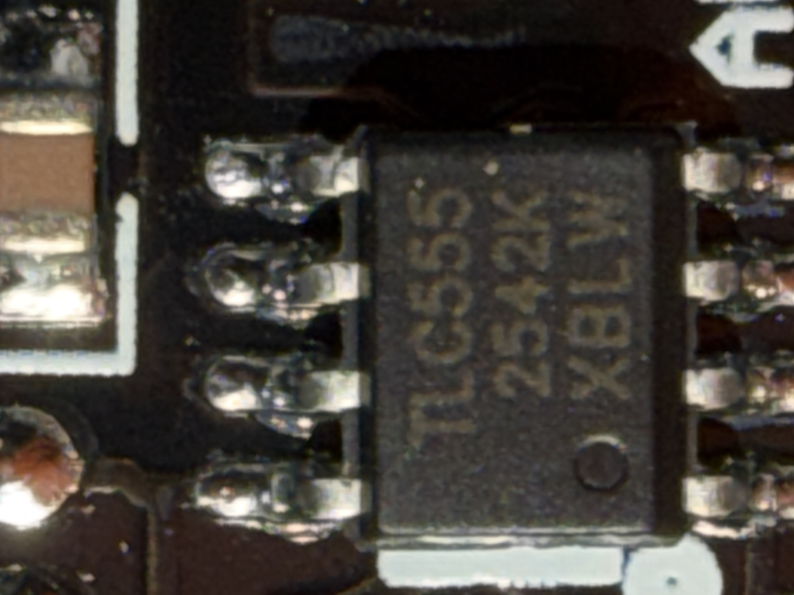
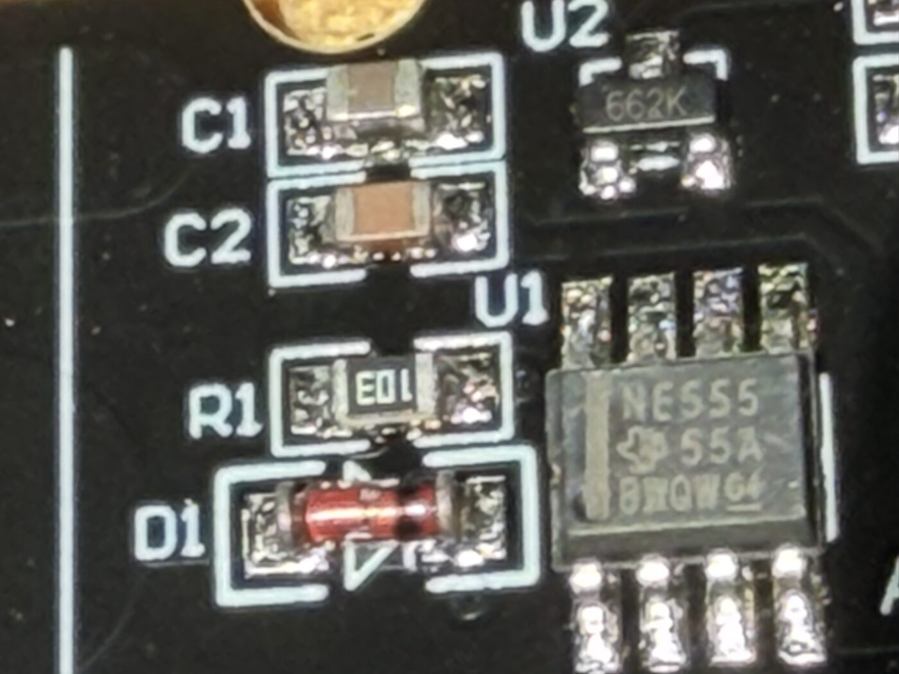
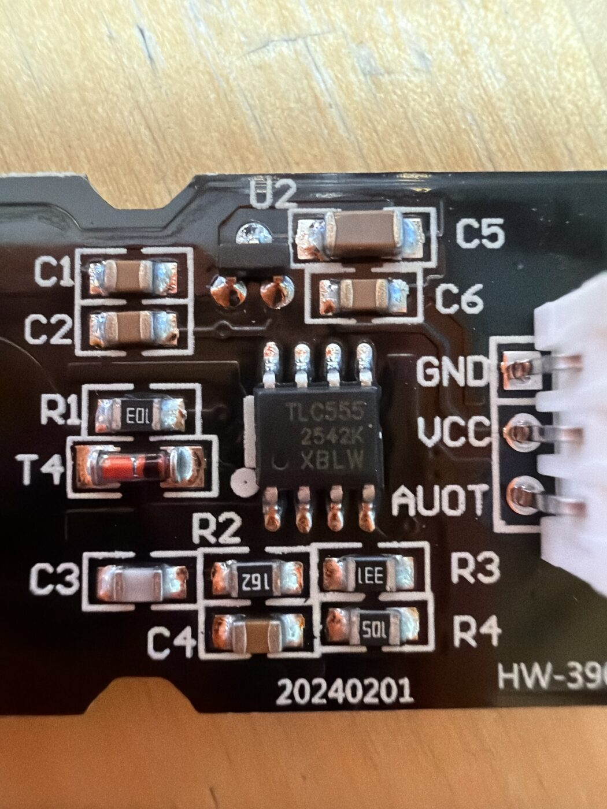

Can you trust your sensor?
A cheap capacitive soil sensor can be wrong before Sprout ever sees the number — a large share of inexpensive boards ship with a known functional flaw. Three minutes, your eyes, and a cheap multimeter tell you whether yours is the well-made kind.
I can only be as good as the sensor I'm reading — so let's make sure yours reads right.

1662K regulator 2TLC555 timer 3GND · AOUTAll three check out → your board is the trustworthy kind.
Dry reads high, wet reads low
These boards measure how much water sits near two copper plates — a capacitor — and turn it into a voltage Sprout reads. More water means lower voltage, so it feels backwards until it clicks. A well-made board caps its output around 0–3.0 V, which is why it reads cleanly on a 3.3 V board with no extra parts.
Capacitive sensors beat the older resistive probes because no metal touches the soil, so nothing corrodes away in a few days. But "capacitive" alone doesn't mean "good" — three flaws separate a trustworthy board from a pretty paperweight.
Find two parts near the cable end
Hold the board up to the light. You're looking for a voltage regulator and a timer chip — present and correctly marked.
Those chip labels are smaller than this sentence — and your phone is the best magnifier you own. Open the camera, get in close, and tap to focus (switch on Macro mode if your phone has it). Turn on the flashlight, or angle a lamp low across the board so the engraved letters catch the light and cast a shadow — that raking light makes faint markings jump out. Snap a few frames from different angles, then pinch to zoom. On iPhone, the Magnifier app (add it to Control Center, or ask Siri) gives you zoom, a light, and contrast filters made for exactly this.
The voltage regulator

Present means good — readings hold steady even as a battery drains. Missing (two solder pads bridged instead) means the output drifts with the supply. Flaw 1
The timer chip


TLC555 is happy on a 3.3 V board. NE555 needs ~4.5 V, so it's unreliable or dead at 3.3 V. Flaw 2
Ignore the version number
v1.2 vs v2.0 printed on the board is marketing, not quality — often the exact same product from one of ~five factories. Judge a board by its parts and the meter test, never by its printed version.
My own four probes carry the 662K and a real TLC555 — the well-made variant. I checked all four.
The flaw you can't see
A misplaced connection can leave a 1 MΩ resistor's ground side floating. A board like that returns the same stale number read after read — it looks like it's working, which is exactly what makes it dangerous. You can't see this one; you measure it.
- Unplug the sensor. Set the meter to resistance (Ω), ~2 MΩ range.
- One probe on GND, one on AOUT.
- Let it settle a second — a small cap charges off the meter.
- Read the number.

My four boards metered 0.993–1.000 MΩ — essentially nominal, and the tight cluster is itself a sign of a good batch.
Which flaw actually bites?
It depends on how you power the board. Match the flaw to your setup before you decide.
No 662K regulator
Give it a clean, steady voltage.
NE555 timer
Run it at ≥ 4.5 V, or replace it.
Floating 1 MΩ resistor
Supply doesn't help — fix it, or replace it.
Three plain choices if a board fails
A slow sensor isn't automatically trash
A board that fails the meter test reacts sluggishly — no quick swing when you push it into wet soil. But soil changes slowly, and Sprout reads on plant-time (every few hours), not by the second. Let each reading settle, skip rapid 5-in-a-row averaging, and a slow board can still tell "dry" from "watered" usefully. Use what you have beats a landfill sensor — just mind the fast-averaging caveat.
The kit won't tell you
A sensor and a microcontroller only get along if their voltages agree — and the kit usually says nothing about either.
Your board's logic voltage
Most modern Wi-Fi boards — ESP32 (all variants) and ESP8266 — run at 3.3 V. Classic Arduino boards (Uno, Nano, Mega) run at 5 V. Not all match, though — a Nano 33 or Nano ESP32 is 3.3 V — so check your board's spec.
What that means for the sensor
An NE555 needs ~4.5 V: fine on a 5 V Arduino, dead on a 3.3 V ESP32. A regulated board caps output at ~0–3.0 V, so it reads safely on a 3.3 V ADC. An unregulated board fed 5 V can push output above 3.3 V — past an ESP32's input range, which can damage the pin. Regulate it, or use a voltage divider.
A voltage mismatch isn't a defect — it's a pairing problem. Match the parts, or swap one.
Trust the position, not the label
Beyond the three functional flaws, these boards routinely ship with silkscreen typos. The most common: the analog-output pin is often printed AUOT, a typo for AOUT. It's cosmetic — the pin works fine. Power-pin mislabels happen too.
Trust the pin's position and the chip markings, not the printed text — and when in doubt, meter it. That habit is the whole point of this guide: trust, or distrust, your own hardware.